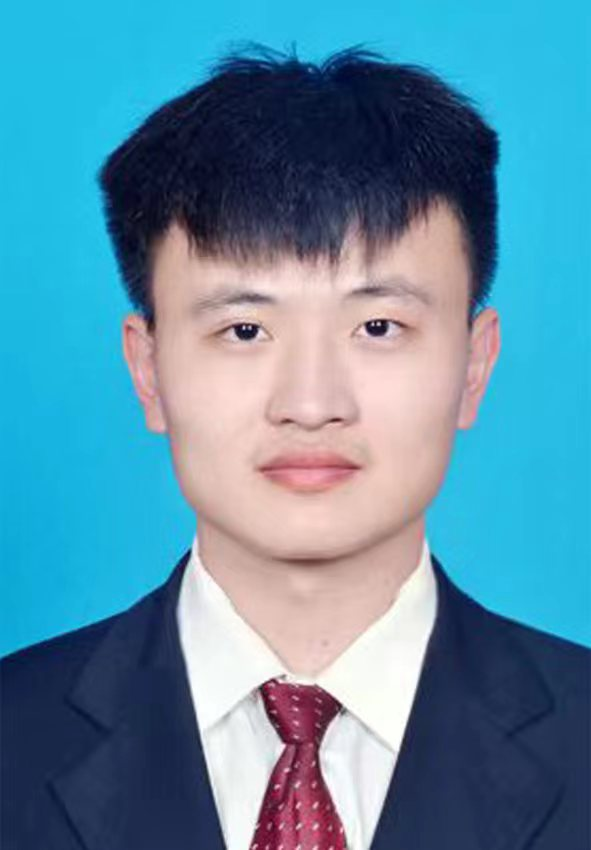

Back to Members
USTC IonQNet Group
Chen-Xu Wang
PhD Student
博士研究生
University of Science and Technology of China
Quantum Network
Ion Trap Node

Research and Background
Education
- 2021.9-now, University of Science and Technology of China, Department of Optics and Optical Engineering, Doctor
- 2017.8-2021.6, Ocean University of China, Faculty of Information Science and Engineering, Bachelor
Research
Quantum information with trapped ions. Quantum simulation, quantum network, distributed quantum computation.
Publications
2BibTeX
@Article{YaoGuo2026COL,
author = "Yao, Qingquan and Wang, Chenxu and Li, Yuancong and Cui, Jinming and Huang, Yunfeng and Li, Chuanfeng and Guo, Guangcan",
journal = "Chin. Opt. Lett.",
title = "Polarization-preserving quantum frequency conversion to {VIS} via cross-band achromatic {UV}-{NIR} waveguide coupling",
year = "2026",
issn = "1671-7694",
month = "December",
number = "2",
pages = "021901",
volume = "24",
abstract = "hotons are essential for interconnecting quantum systems in quantum networks, where polarization is a widely used degree of freedom for encoding quantum information. However, frequency bands suitable for different quantum systems often do not align. While polarization-preserving quantum frequency conversion (PPQFC) is essential for interconnecting heterogeneous quantum systems, existing solutions lack cross-band capability between ultraviolet (UV) and near-infrared (NIR) regimes. Here, we experimentally demonstrated a PPQFC method that exploits the low-loss, self-phase stabilization of polarization and facilitates cross-band achromatic waveguide coupling. Specifically, we demonstrated the polarization- preserving quantum frequency conversion from UV 369.5 nm to visible 580 nm with infrared pumping at 1018 nm, achieving long-term fidelity of 97.6\% ± 1.0\% at wavelengths relevant to trapped ions 171Yb+ and solid-state 153Eu3+:Y2SiO5 quantum systems. This work demonstrates a versatile PPQFC solution for future heterogeneous quantum networks.",
creationdate = "2026-04-02T14:03:45",
doi = "10.3788/COL202624.021901",
groups = "SCI1, First/Corresponding, SCI, Journal",
keywords = "/unread",
language = "EN",
owner = "jmcui",
url = "https://www.researching.cn/articles/OJac5d7c8392f3989d",
urldate = "2026-01-05"
}
BibTeX
@Article{王晨旭郭光灿2022物,
author = "王晨旭 and 贺冉 and 李睿睿 and 陈炎 and 房鼎 and 崔金明 and 黄运锋 and 李传锋 and 郭光灿",
journal = "物理学报",
title = "量子计算与量子模拟中离子阱结构研究进展",
year = "2022",
issn = "1000-3290",
month = "July",
note = "Publisher: 物理学报",
number = "13",
pages = "133701",
volume = "71",
abstract = "离子阱系统是实现量子计算和量子模拟的主要体系之一. 世界范围内的各个离子阱研究小组共同推动着离子阱结构的丰富化发展, 开发出一系列高性能的三维离子阱、二维离子芯片、以及具有集成器件的离子阱系统. 离子阱的结构逐渐向小型化、高通光性和集成化方向发展, 并表现出卓越的量子操控能力—对多离子的囚禁能力和精确控制能力越来越高. 本综述将总结过去的十几年里离子阱在结构上的演化历程, 以及离子阱在量子计算与量子模拟实验研究中的最新进展. 通过分析具有代表性的离子阱结构, 总结离子阱系统在加工工艺、鲁棒性和多功能性等方面取得的进步, 并对基于离子阱系统的可扩展量子计算与模拟作出展望.",
affiliations = "{ {中国科学技术大学，中国科学院量子信息重点实验室，合肥 230026}, {中国科学技术大学，量子信息与量子科技前沿协同创新中心，合肥 230026}, {合肥师范学院物理与材料工程学院，合肥 230601} }, { {{王晨旭}{1,2}}, {{贺冉}{1,2,3}}, {{李睿睿}{1,2}}, {{陈炎}{1,2}}, {{房鼎}{1,2}}, {{崔金明}{1,2}}, {{黄运锋}{1,2}}, {{李传锋}{1,2}}, {{郭光灿}{1,2}} }",
copyright = "http://creativecommons.org/licenses/by/3.0/",
corresauthor = "贺冉 and 崔金明",
creationdate = "2026-04-02T14:06:01",
doi = "10.7498/aps.70.20220224",
groups = "SCI, SCI1, First/Corresponding, Journal",
language = "zh",
owner = "jmcui",
url = "https://wulixb.iphy.ac.cn/cn/article/doi/10.7498/aps.70.20220224",
urldate = "2022-08-16"
}